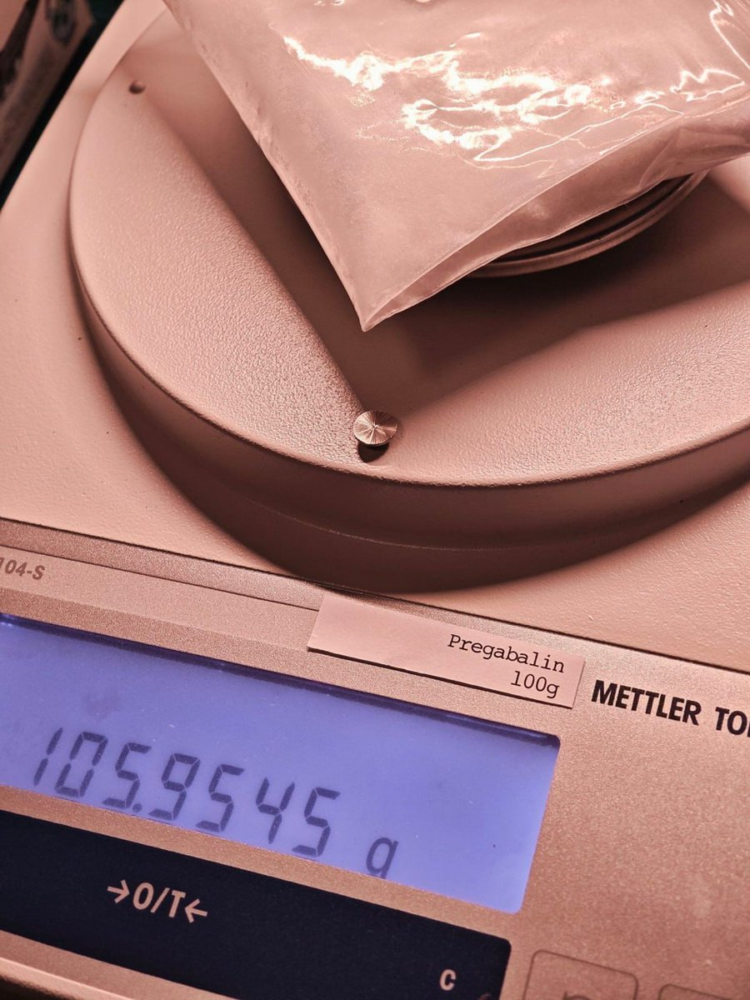

RT @UWATCHLIFE: 本壬自7.11发起的普瑞团购，因缺少经验，延误下历经23日，终于在8.3告一段落。此次购入12kg普瑞，59位团员已全体到货。普瑞进价8毛克，为酬劳分发员涨至1元。目前因本壬的无能，亏损约五百元。感谢所有的团员，感谢分发员，并感谢提供渠道的先辈！…


本壬自7.11发起的普瑞团购，因缺少经验，延误下历经23日，终于在8.3告一段落。此次购入12kg普瑞，59位团员已全体到货。普瑞进价8毛克，为酬劳分发员涨至1元。目前因本壬的无能，亏损约五百元。感谢所有的团员，感谢分发员，并感谢提供渠道的先辈！
至于本团多余的1.1kg，可私信@freepgbplz 以1.5/g购买 https://t.co/X7cPZrTgHf
至于本团多余的1.1kg，可私信@freepgbplz 以1.5/g购买 https://t.co/X7cPZrTgHf